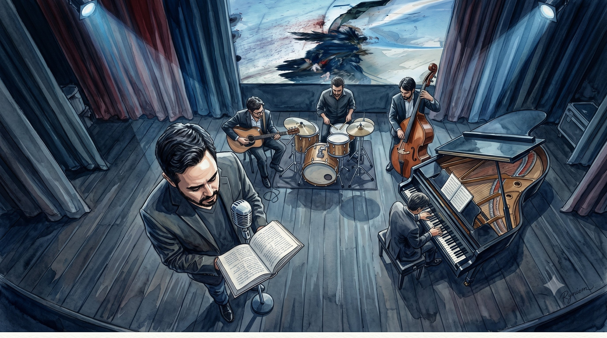
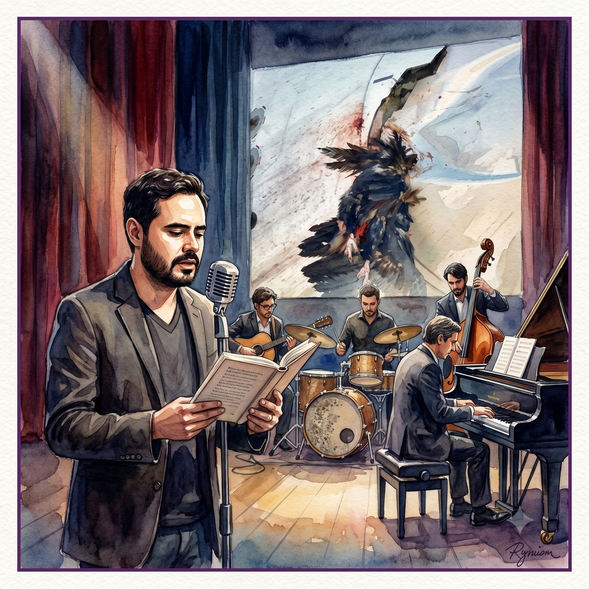

Palabra
Cuentos inéditos
Relatos escritos a partir de fotografías reales tomadas por el autor. A medio camino entre el cuento breve, la crónica y la prosa poética — historias donde la ternura vence al dolor.
Lecturas musicalizadas en vivo. Mientras un autor narra sus relatos, un cuarteto compone la banda sonora en tiempo real — y sus fotografías se proyectan como universo visual.
Tres lenguajes en una sola experiencia: palabra, música e imagen — compuestos en el instante en que la historia se cuenta.
Diego Londoño lee sus cuentos inéditos — nacidos de fotografías que él mismo tomó en aeropuertos, aceras, hospitales y calles de paso — mientras un cuarteto de músicos compone la banda sonora en tiempo real. Las fotografías originales se proyectan como universo visual, uniéndose con el texto y la música en un único recorrido.
Nada está pregrabado. La música se compone en el instante y se fusiona con cada relato, el ambiente de cada párrafo, el silencio que separa una frase de la siguiente.
Lo que el lector suele hacer solo, en privado, aquí se convierte en una experiencia colectiva: un público entero atravesando, al mismo tiempo, los mismos lugares, los mismos sonidos, los pequeños detalles que hacen a la lectura una experiencia que estimula los sentidos y la imaginación.

Un producto cultural de impacto y una manera novedosa de vivir la lectura.
Relatos escritos a partir de fotografías reales tomadas por el autor. A medio camino entre el cuento breve, la crónica y la prosa poética — historias donde la ternura vence al dolor.
Un cuarteto genera en tiempo real una atmósfera musical que se fusiona con cada relato. La música reacciona al texto, compuesta e interpretada en el instante.
Las fotografías originales del autor se proyectan como universo visual, uniéndose con el texto y la música como un único recorrido sensorial.
Definimos la dramaturgia musical y la curaduría literaria del show. Cada relato tiene su atmósfera sonora.
Nos encargamos de la dirección musical, el diseño sonoro y la proyección fotográfica. Tú solo necesitas el espacio.
60 minutos de música, palabra e imagen en un solo acto. Nada pregrabado, todo compuesto en el instante.
Toma una fotografía con palabras que dan un brillo de inmortalidad a lo fugaz.

Conocido como El Fan Fatal, Diego Londoño (Medellín, 1989) es escritor, periodista y locutor en Radiónica, la cadena pública y radial colombiana. Crítico musical de El Colombiano y miembro de la REDPEM — Red de Periodistas Musicales de Iberoamérica.
Autor de siete libros publicados por Penguin Random House y Editorial Planeta, entre ellos la biografía oficial de Juanes, Brutal Honestidad — las vidas de Andrés Calamaro (premio CPB 2021), y Medellín en Canciones (premio Subterránica 2014). Sus obras se han vendido en Latinoamérica y Europa con traducciones al inglés y francés.
En Páginas Sonoras, Diego lee sus propios cuentos inéditos — El libro de las pequeñas cosas — relatos nacidos de fotografías tomadas en aeropuertos, aceras, hospitales y calles de paso. A medio camino entre la crónica y la prosa poética, son memorias de un mundo extinto que renace en historias donde la ternura vence al dolor.
Presentaciones de libro convertidas en experiencia inmersiva: un lanzamiento que la gente recuerda por lo que sintió.
Un acto central de programación literaria que se distingue del panel y la firma de ejemplares.
Programación de calidad para públicos exigentes, con un formato propio y memorable.
Extensión cultural que acerca la gran literatura a nuevas generaciones por una vía sensorial.
Una función distinta para la temporada: lectura y música en vivo, con producción técnica completa.
Eventos culturales de ciudad con sello de autor, listos para itinerar entre escenarios.
Hay algo extraordinario en lo ordinario. En estos relatos sopla el viento de la noche a la intemperie y calienta el sol de mediodía. El lector puede sentirlo en su piel.
Juan Mosquera Restrepo (Medellín, 1973) es escritor, periodista, agente cultural y poeta. Autor de Estaba en llamas cuando me acosté (Sílaba Editores). Guionista, cronista y columnista para medios nacionales e internacionales. Defensor de la vida y los derechos humanos.
Cuéntanos el espacio y la fecha. Nosotros diseñamos la experiencia completa.